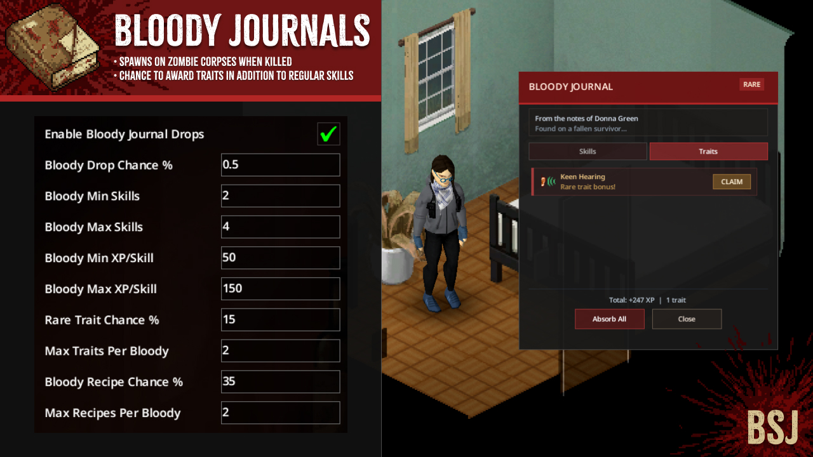

Document the mod by journal family first, then by mechanics, then by sandbox tuning.
BSJ Archive
Current Focus
Built Around
Dev-First
A field guide for every journal BSJ can drop, restore, wrap, or curse.
This homepage now behaves like a mod reference desk instead of a generic feature stack. It is the player-facing guide to the current BSJ surface: personal recovery journals, container finds, corpse drops, dormant cursed seals, and the Yuletide gift journals now living in the dev branch.
Player journals and recovery rules
Worn and bloody loot journals
Cursed seal-breakers
Yuletide gifts and seasonal delivery
Skills, traits, recipes, stats, forget slots, limited claims, baseline safety, and batch actions.
The docs now track the active dev-era journal surface instead of freezing around the older helper-only site.
Player Journals
Record earned progress, manage baseline-safe recovery, and decide whether restored journals should dissolve or persist.
Loot Journals
Container and corpse finds can now include skills, traits, recipes, passive skills, and forget slots.
Fun Journals
Cursed and Yuletide systems turn journals into events, not just static XP containers.
Server Controls
Sandbox groups cover progression, loot tuning, seasonal hooks, batch timing, compatibility, and recovery safety.
Start from the journal family, not the settings menu

Player Recovery
Personal journals anchor the whole BSJ recovery loop.
See how authorship, earned-progress recording, restored badges, and persistent behavior actually work.

Container Loot
Worn journals
World-found notes that can now carry traits, recipes, passive skills, and forget slots.

Corpse Loot
Bloody journals
Higher reward ceilings, stronger loot identity, and the cleanest combat-to-progression payoff.

High Risk
Cursed journals
Dormant drops that punish the first opener before becoming upgraded reward journals.
Seasonal Gift
Yuletide journals
Wrapped seasonal replacements with bundled supplies, optional safehouse delivery, and a once-only gift reveal.
Use the site like a game manual, not a changelog
Learn the survival loop first.
Start with where journals come from, which ones are safe to open, and what a normal claim loop looks like.
Tune recovery without flattening progression.
Use the config and admin pages to separate baseline safety, loot strength, seasonal hooks, and debug recovery tools.
Keep content and strings aligned.
The translation helper still lives here, but it now sits inside the broader docs instead of replacing them.
Questions players ask first
What is the difference between restored and persistent journals?
See how restored origin status, auto-dissolve, and reusable rewards are separated.
What exactly is a forget slot?Understand how trait-removal rewards work and why loot journals can stay valuable even without a direct upgrade.
What makes Yuletide journals different from ordinary loot journals?They are wrapped, seasonal, can replace worn or bloody rolls, and can grant bundled gifts when unwrapped.
Which sandbox groups matter most on a first server setup?Player, loot, fun-loot, advanced, and other-mod sections are split so you can tune BSJ without guessing.
Journal family dossiers
Personal
Authorship, recovery rules, baseline-safe recording, and restored state.
Worn
Container loot with configurable skill, recipe, trait, and forget-slot rolls.
Bloody
Corpse loot with stronger reward ceilings and a heavier progression profile.
Cursed
Break-the-seal loot that hurts first, then upgrades into a richer journal.
Yuletide
Seasonal gift journals with wrapped variants, bundled supplies, and safehouse delivery hooks.